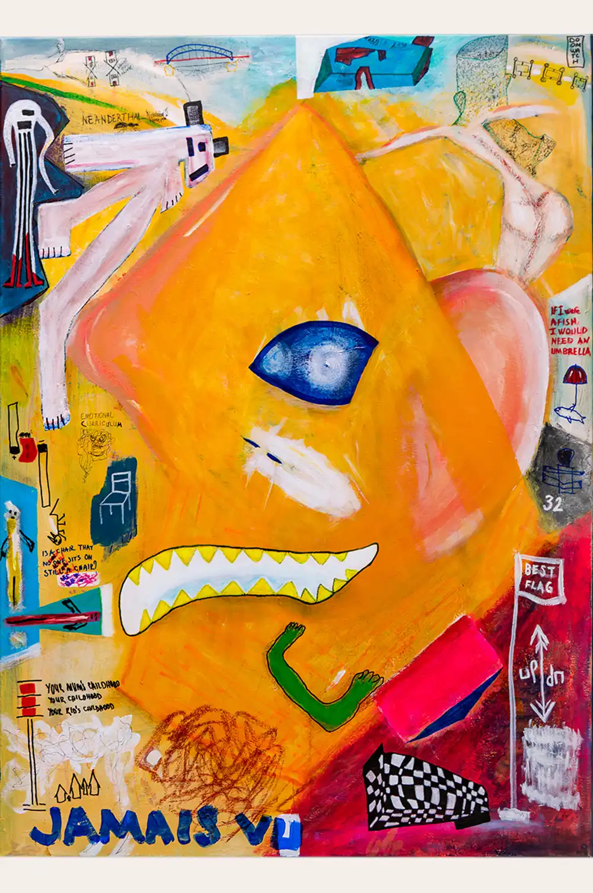
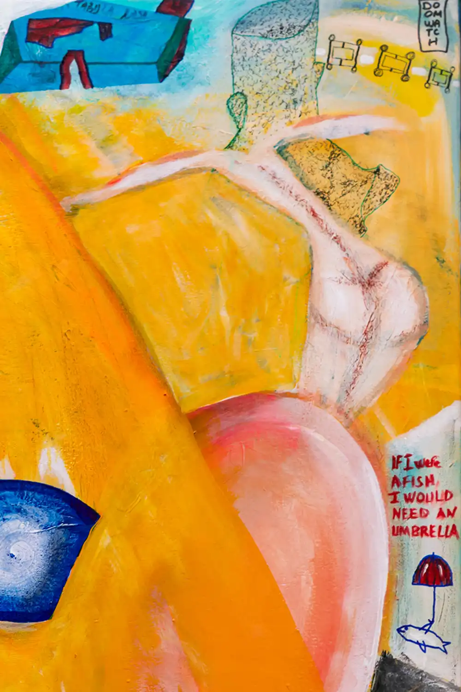
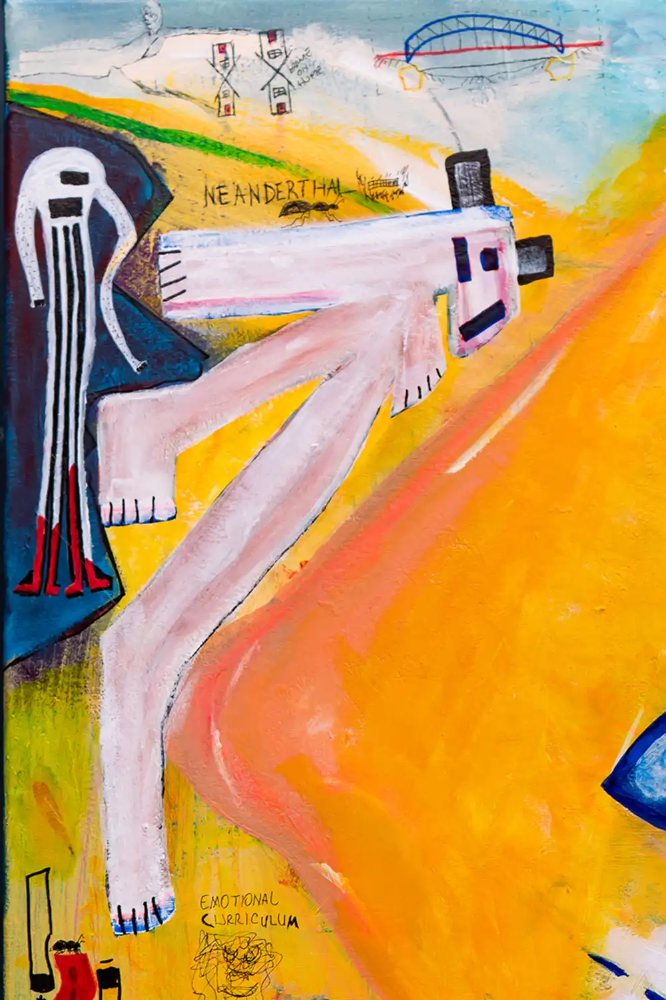
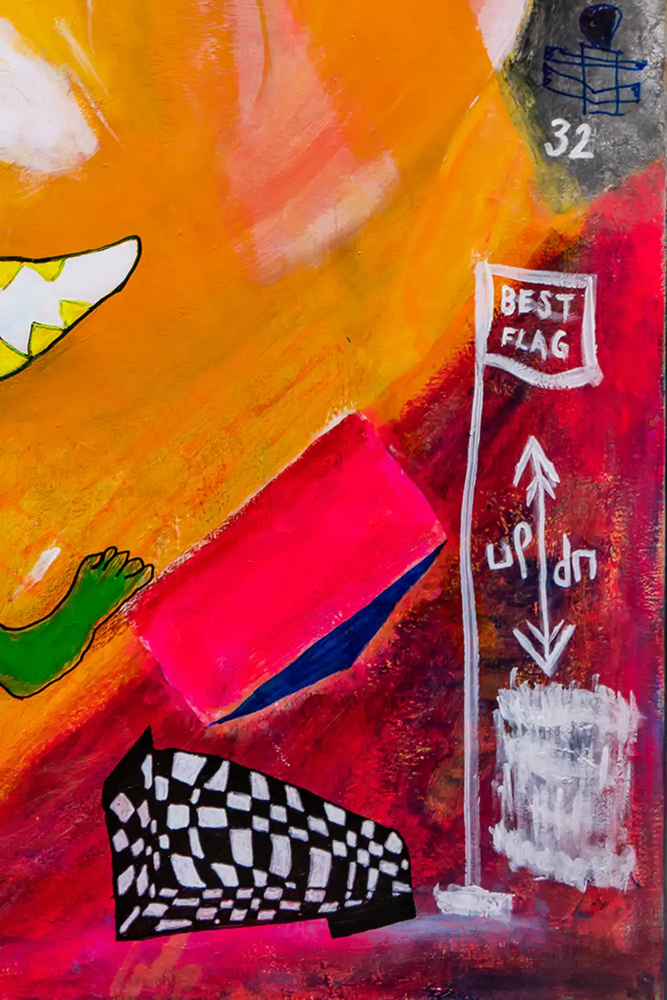
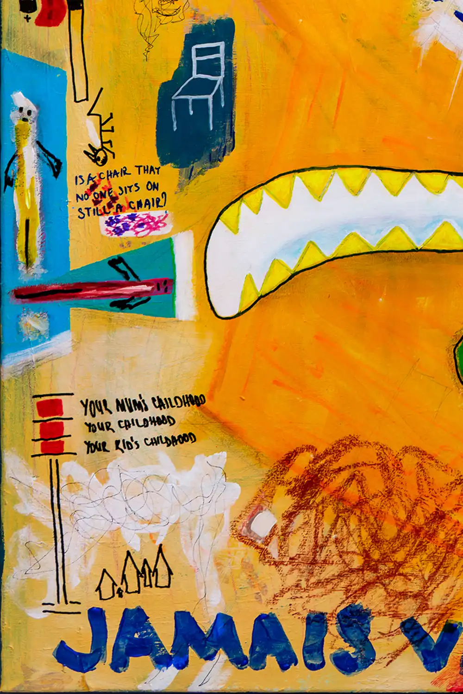
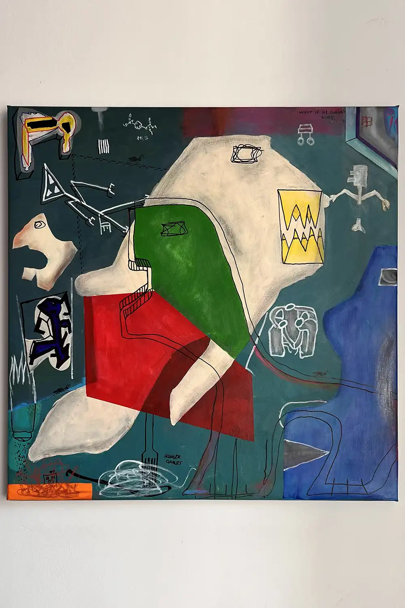

Ü M i T S U R A L
Works
Journal
About
Contact





<
Previous
01 / 08
Next
Related Works
I Lost My American Dream
2023

Encyclopedia of Sentiments
2025
Escaping Mind
2024
Read the Studio Note on looking, gesture and abstract painting →